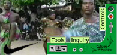
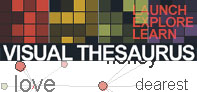
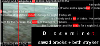

Navigation is a set of information elements that represent where we are , and affordances that represent where we can go. Dynamic navigation responds to gesture. It enables the user to trigger simplified views of a structured collection of information elements. Dynamic navigation uses focus+context techniques to present structured, simplified representations of the elements in a collection, providing more detail about an element in response to human interaction. Goals include visualizing relationships, reducing cognitive load, and facilitating navigation.
 reading: a recombinant information space [Andruid Kerne]
Doctoral thesis paper dealing with the organization of information.
reading: concept-context-design: a creative model for the development of interactivity [Andruid Kerne]
This lovely placeholder description.

example: the
visual thesaurus
[Plumb Design]
The visual thesaurus connects a masses and springs
graphical simulation model with
Word Net,
a lexical reference system that organizes the English language into
synonym sets.
(Click "look it up", then try double-clicking a word in the midst.)
(Click "look it up", then try double-clicking a word in the midst.)
example: conversation map [Warren Sack]
Conversation Map is a newsgroup browser that is designed to make it easier for participants to understand and reflect on very large-scale conversations. Conversation Map system analyzes the content and the relationships between messages and then uses the results of the analysis to create a graphical interface. With the graphical interface, a participant can see the social and semantic relationships that have emerged over the course of the discussion. The Conversation Map system computes and then graphs out who is "talking" to whom, what they are "talking" about, and the central terms and possible metaphors of the conversation.
 example: DissemiNET [Sawad Brooks and Beth Stryker]
Creating a repository for personal and social memory, DissemiNET uses
web technologies to give visual form to the transactions (deposits,
retrievals, and loss) through which we experience memory. Drawing
parallels between diasporas and the dispersal of meaning over the web,
DissemiNET provide spaces (lacunae) for people to recall and
recollect, gathering there to re-tell stories about their own
experiences with displacement and dispersal.
example: zentences [Steve Mason and David Wilkie]
A recombinant sentence generator, walks through verb and noun structured variations.